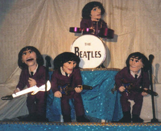

Beatles act falls apart!
5/16/2010
Bob Abdou has been performing his Beatles puppet show every year since 1995 at Official Beatles conventions in New York, Chicago, Los Angeles, Nashville, Orlando and Atlanta. To keep coming back year after year, Bob creates new acts, all with a Beatles theme. In all, there are 25 different Beatles routines that have been performed, and 3 new ones are being created for 2011. Each Sunday at these conventions there are almost 2000 attendees that arrive early to the convention, and Bob's show is the opening act. Bob states, "as an entertainer, there is no greater feeling than hearing 2000 folks laugh at your jokes. One year I cried tears of joy because it was very overwelming - this is when I knew I made it."
Here are some bits from Bob's new show from this past Beatles convention 2010 in New York, Sunday morning: http://www.youtube.com/watch?v=i-QOFtBor70 Be certain to check out the "fall apart" Danny O'Day bit - the breakaway dummy was created for Bob by Kevin Detweiler. To see more photos and videos check out http://www.mrpuppet.com/
Bob premiered his Beatles show at the 1995 Ventriloquist convention and re-inacted the act when the Beatles performed on the Ed Sullivan Show, Feb 9, 1964. He even had an Ed Sullivan puppet introduce the act. Here is a photo from that magical night.
{kind=link}

puppet.com/Bob premiered his Beatles show at the 1995 Ventriloquist convention and re-inacted the act when the Beatles performed on the Ed Sullivan Show, Feb 9, 1964. He even had an Ed Sullivan puppet introduce the act. Here is a photo from that magical night.